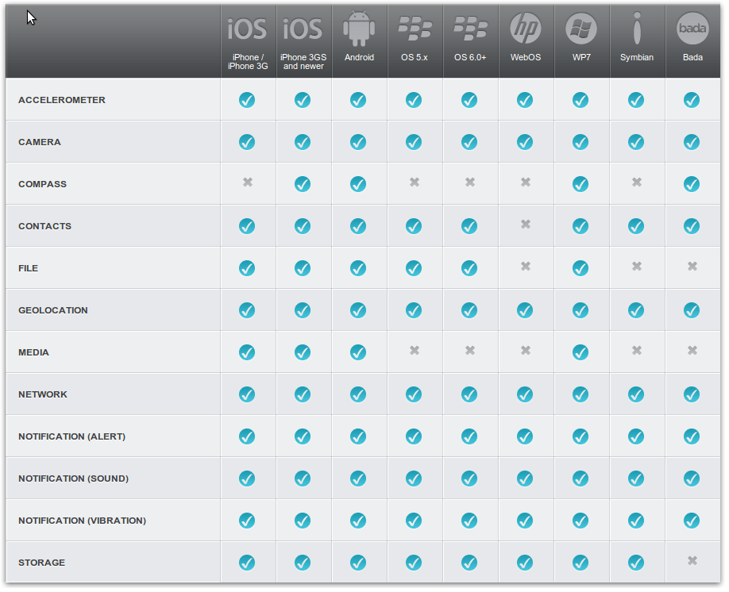
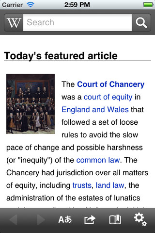
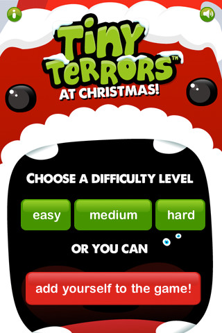
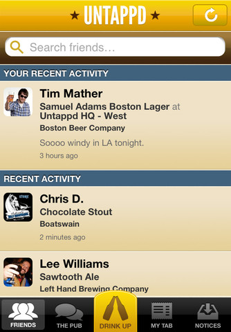
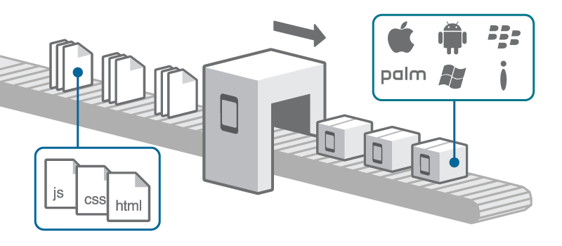

.center.middle # PhoneGap Ivar Conradi Østhus 27.06.2012 --- # Hva er PhoneGap? 1. Er open source (<a href="https://github.com/phonegap/phonegap">github.com</a>) og nå under Apache under navnet *Cordova* 2. Wrapper et WEB-view med en container 3. Lar deg skrive applikasjoner basert på **web standarder** - HTML5, CSS3 og JavaScript 4. Wrapper applikasjonen og gir tilgang til native API'er - Camera, Compass, Media, GPS, Storage, Contacts, etc. 5. Baserer seg på HTML5 standarder 6. Gjør det enkelt å deploye til mange plattformer - iPhone, Android, WP7 osv. 7. Play store og AppStore ### *Write once, debug everywhere...* ---  --- .center.middle # Device APIs / Data ### W3C Standard --- # GhoneGap applikasjonerv    ### *Og et par tusen til...* --- # Basics: deviceReady-eventen // Wait for Cordova to load document.addEventListener("deviceready", onDeviceReady, false); // Cordova is ready function onDeviceReady() { var element = document.getElementById('deviceProperties'); element.innerHTML = 'Device Name: ' + device.name + '<br />' + 'Device Cordova: ' + device.cordova + '<br />' + 'Device Platform: ' + device.platform + '<br />' + 'Device UUID: ' + device.uuid + '<br />' + 'Device Version: ' + device.version + '<br />'; } <br /><br /><br /> ### Du må alltid huske å vente på denne eventen!! --- # Basics: geolocatoion document.addEventListener("deviceready", onDeviceReady, false); function onDeviceReady() { navigator.geolocation.getCurrentPosition(onSuccess, onError); } function onSuccess(position) { alert("Lat: " + position.coords.latitude); } --- # Basics: geolocatoion document.addEventListener("deviceready", onDeviceReady, false); function onDeviceReady() { navigator.geolocation.getCurrentPosition(onSuccess, onError); } function onSuccess(position) { alert("Lat: " + position.coords.latitude); } --- # Basics: contacts //create var myContact = navigator.contacts.create({"displayName": "Test User"}); //find navigator.contacts.find(contactFields, contactSuccess, contactError, contactFindOptions); //contact methods: contact.clone contact.save contact.remove --- # Basics: Web SQL function populateDB(tx) { tx.executeSql('DROP TABLE IF EXISTS DEMO'); tx.executeSql('CREATE TABLE IF NOT EXISTS DEMO (id unique, data)'); tx.executeSql('INSERT INTO DEMO (id, data) VALUES (1, "First row")'); tx.executeSql('INSERT INTO DEMO (id, data) VALUES (2, "Second row")'); } function errorCB(err) { alert("Error processing SQL: "+err.code); } function successCB() { alert("success!"); } var db = window.openDatabase("Database", "1.0", "Cordova Demo", 200000); db.transaction(populateDB, errorCB, successCB) --- # Basics: Web Storage window.localStorage.setItem("key", "value"); var value = window.localStorage.getItem("key"); window.localStorage.removeItem("key"); window.localStorage.setItem("key2", "value2"); window.localStorage.clear(); Brukes typisk sammen med: var str = JSON.stringify({test:"hello"}) JSON.parse(str) --- # Hva får du ikke av PhoneGap? - Ingen grafiske komponenter - Heavyweight data processing er tregt i JavaScript - Debuggers - console.log - via SDK emulator - Ripple - Ikke et testrammeverk - En god idé til en ny applikasjon --- # GUI Libs in HTML/CSS/JS - jQuery Mobile - Sencha Touch - Dojo Mobile - Jo - Glove Box - Ekiben --- # PhoneGap plugins PhoneGap plattformen er utvidbar ved å_ 1. Lage custom *native* komponent - Må gjøres for alle enheter du har tenkt å støtte. 2. Lage et JavaScript API som eksponerer komponenten. - Dette trenger du bare å gjøre en gang. (*Dette er det samme som PhoneGap selv gjør for å eksponere vanlige funksjoner.*) #### https://github.com/phonegap/phonegap-plugins/ --- # Raskere feedback? - Ekte emulatorer er tregt - Vi utvikler bare en HTML-applikasjon - Pakking og deploy gir treg feedback... ### Ripple Mobile Emulator - Chrome extension - Emulerer ulike miljøer og device-størrelser - Gir umiddelbar feedback på endringer - <a href="http://rippledocs.tinyhippos.com/">http://rippledocs.tinyhippos.com/</a> ### Lokal WEB-server - Hoste "koden" lokalt i et veldig likt format som på telefonen. - Nødvendig for å laste kode/templates asynkront python -m SimpleHTTPServer --- # WebScraping i native apps Same origin policy gjelder ikke for web-applikasjoner som "native" apps. Dette betyr at vi kan WebScrape med jQuery... jQuery.get("http://www.finn.no", function(data) { var items = $(data).find("some_node_i_want"); }) --- # PhoneGap:build  --- .center.middle # Let's start hacking...